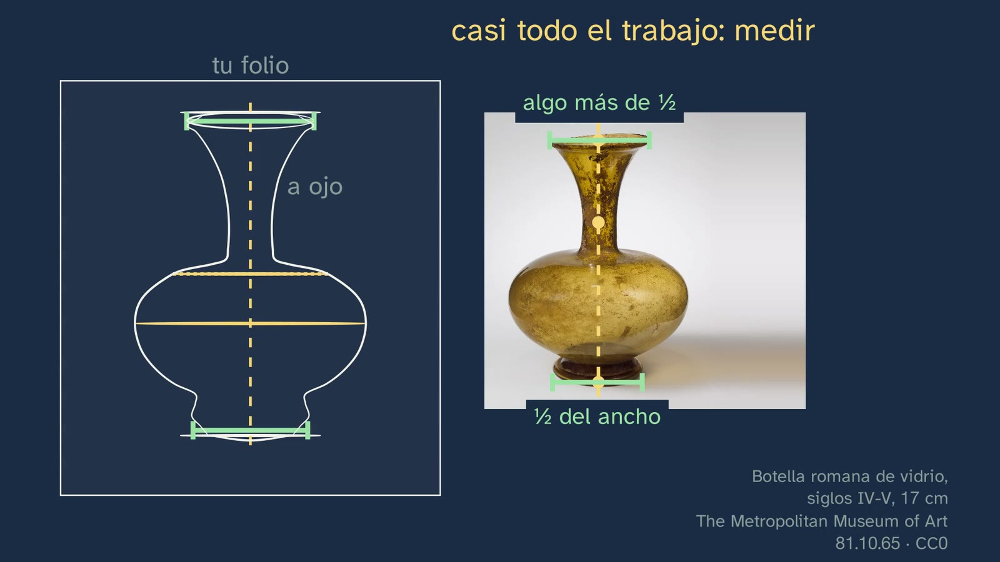

Measuring with your pencil
In a nutshell
This is the channel's first Artistic Drawing workshop, with Marina in a smock in the art room. Class 1 ended with an idea: we don't draw what we see, but what we know about things. This one provides the tool for drawing what is seen: measuring with the pencil, with the arm outstretched. Its message fits in one line: the pencil doesn't measure centimetres, it measures proportions.
It opens with the solutions to class 1 and with a hook from more than five hundred years ago. Leonardo da Vinci wrote down, in the notes that were later gathered in the Treatise on Painting (§87), how to copy a landscape through a pane of glass: the eye, two thirds of an arm's length from the glass; the head, held still with an instrument; one eye, closed or covered. The class reads it on the page of the 1890 Rome edition and draws it. Why one eye, and why so still?
The answer is built from the student's own eyes. First, from the side: light travels from each point of the bottle to the eye and, where it crosses the glass, a point is marked. Then the camera travels to the eye and the drawing on the glass falls exactly on top of the real bottle: what you mark on the glass is what you see. A strip of that glass, standing next to the bottle, becomes the pencil: the top mark is the tip, and the bottom one, the thumbnail. What is measured is the piece from the tip to the thumb, not the whole pencil. The hand, the pencil and a student in profile are illustrated, so that the gesture is recognised at once.
Students predict and measure on a Roman glass bottle from the Met: are the mouth and the neck shorter than the body? No: they fit exactly once, and the bottle's shoulder is at halfway. When you move closer, the measurement grows and the proportion doesn't change. With that, Leonardo is answered, by checking it: if you bend your elbow between one measurement and the next, the pencil looks bigger and the measurement no longer matches (the thumb goes past the foot); and when you switch eyes, the pencil jumps.
The second half is a workshop. The bottle, blocked in step by step from what is seen onto a sheet of paper, which has its own size: the two lines, halfway, the width (with the pencil laid flat; it fits once and almost a half into the height), the axis with the pencil hanging like a plumb line, everything else compared and, at the end, the line, which a hand draws. The blocking in is checked by putting the drawing on top of the photo: the measured one hardly strays; one done by eye (invented for the example, and the class says so) strays quite a lot. To be honest: there are no studies that have measured how much a drawing improves by measuring. Slanted lines are copied by reading the pencil like the hand of a clock, on a Shaker side chair from the Met. Students block in the mug themselves, on their sheet, with the video paused, and check it with a measurement. The class closes with the beginner's mistakes, with the student who tilts the pencil towards her face, and Van Gogh, who learned to draw almost on his own, from books: his road in Etten (1881), what he wrote to Theo about practice ("it can't be bought with books; if it could, perhaps more of them would sell"), three exercises and an open question, with the clue of his street in Saintes-Maries (1888), seen so close up that the pencil shows under the ink.
Objective. By the end, students will know how to measure what they see with the pencil (arm outstretched, one eye, from the tip to the thumb) and how to block in any object from life on their sheet of paper: halfway, the width, the axis with the plumb line and the slanted lines copied, checking it on top of the model; and why it works.
For readers outside Spain: the Bachillerato is the last two years of secondary school (ages 16–18); it follows ESO, the four years of compulsory secondary education (ages 12–16). Artistic Drawing I is a compulsory subject in the first year of the Arts strand of the Bachillerato. The BOE is Spain's Official State Gazette, where every law and decree is published. Spain is divided into seventeen autonomous communities (regions), plus the autonomous cities of Ceuta and Melilla; each completes the national curriculum with its own, and this sheet mentions some of them. The video is in Spanish, with English subtitles; the images on this sheet come from the video and keep their Spanish text. Spanish documents (the decrees) are quoted in our translation; English sources are quoted in the original, and Italian, French and Dutch ones in the original with our translation alongside. Decimals are written here with a point (1.46), not with the Spanish comma.
Curriculum
Spain's Royal Decree 243/2022, annex II, Artistic Drawing, a compulsory subject in the first year of Bachillerato in the Visual Arts, Image and Design pathway. Quotations checked in the BOE's consolidated text (its latest update, of 02/07/2026, does not touch annex II) and, for the page numbers, in the original (BOE no. 82, of 6 April 2022). Our translation of the official Spanish text.
| Element | What the decree says | Where the class works on it |
|---|---|---|
| Core knowledge (block B, "Graphic expression and its basic resources") | "The sketch or rough. Introduction to blocking in." (p. 46128) | The whole class: the method of measuring and blocking in the bottle (6:28–8:50) and the mug (9:17–10:13) |
| Core knowledge (block A, "Concept and history of drawing") | "Drawing as an interactive process of observation, reflection, imagination, representation and communication." (p. 46127) | Measuring is observing with a method: Leonardo's glass, the eye and the strip of glass that becomes a pencil, and the check on top of the photo (1:50–6:19 and 8:14) |
| Specific competence 8, description | "Through framing and blocking in, that information is organised on the chosen support and proportions are established…" (p. 46125) | Deciding the size on the paper (framing) and transferring proportions, not centimetres (blocking in) |
| Introduction to the subject | Drawing as "an almost scientific working method of exploration and enquiry" (p. 46121) | The class puts each rule to the test: predicting and measuring halfway, moving closer, the elbow, the jumping pencil, the drawing on top of the photo |
| Criterion 8.1 | "To represent the chosen model graphically, selecting and abstracting its most representative features, based on its study and analysis." (p. 46127) | Blocking in: from large to small, and the small things, by eye |
| Criterion 8.2 | "To use framing, blocking in and perspective to solve problems of graphic representation, analysing both the different volumes and the space that completes the whole." (p. 46127) | Blocking in the bottle and the mug, and the chair in exercise 2 |
What students need to bring. From ESO (Royal Decree 217/2022, Visual and Audiovisual Arts Education), "Composition. Concepts of balance, proportion and rhythm…". From ESO Mathematics, similarity and the intercept theorem (which Spain calls Thales's theorem): the class doesn't name them, but they are the geometry of what it teaches (see "Notes"). From class 1, that we draw what we know and not what we see (0:18).
The hours. In the seven autonomous communities compared it is four hours a week in the first year (in the Basque Country, three as a minimum and four as a reference). The video provides the method and its why; classroom time is left for blocking in from life.
How the class is built
Video chapters
About twelve and a half minutes, in thirteen chapters. It is a workshop class: students measure the bottle, block in a mug on their sheet and, if they want to, draw the bottle at the same time as the board. It follows the department's model: look, measure and draw, with one complete example (the bottle), one half-done (the mug) and one on their own (the chair in exercise 2). The gesture is always taught from the student's own eyes, with an illustrated hand and pencil over the real photo, and the voice slows down only in the detailed steps.
| Chapter | What happens | Why this way |
|---|---|---|
| What we'll see | Marina introduces the first workshop. The topic map and what is needed: a pencil, a sheet of paper and a bottle or a mug (0:05). | The map, in every class. |
| What you already know | Where do we put the eyes from memory? Do you know why? (0:18, pause). Too high; the hypothesis that fits best: we draw the head we think it is (0:34). | Retrieving class 1 and its idea, which is the reason for measuring. |
| The solutions | The three exercises from class 1, each with its statement: the plate, tracing and copying, the second face (0:49). | ADR-112: the solutions open the next class. |
| Leonardo's advice | §87 of the Treatise on Painting, read on the 1890 page and drawn at the same time: the glass, the two thirds of an arm's length, the head held still, the eye closed (1:50). "Why one eye closed and the head still?" (2:26). | The hook with its context. |
| From the glass to the pencil | From the side, the light from the bottle to the eye and the points on the glass (2:34). The camera travels to the eye: the drawing covers the bottle (2:50). The strip of glass becomes a pencil: the tip and the thumbnail; your measurement, from the tip to the thumb (3:05). | Intuition before the rule, and the answer to "the whole pencil or just a part?". |
| How to hold it | The student in profile: the arm fully outstretched, the pencil upright and one eye closed, numbered in the figure and in the list (3:35). | The gesture, seen from outside before doing it. |
| Measure it yourself | Are the mouth and the neck shorter than the body? (3:55, pause). The measurement, step by step, from your own eyes: the tip on the mouth, the thumb on the bottle's shoulder, the pencil lowered without moving the thumb; they measure the same (4:10). You move closer: the measurement grows and the proportion doesn't; the pencil measures proportions (4:46). | Predicting, measuring and understanding why it is proportions that are measured. |
| Still, and one eye | If you bend your elbow as you lower the pencil, does the same measurement still work? (5:11, pause). No: the pencil looks bigger and the thumb goes past the foot (5:26). With one eye and then the other, the pencil jumps (5:48). Marina, halfway through (6:19). | The answer to Leonardo, checked by the students themselves. |
| Blocking in a bottle | The sheet on the left and what you see on the right. Seven steps: the spot, the size, halfway, the width with the pencil laid flat, the axis with the plumb line, everything else and the line, which a hand draws (6:28–8:14). The drawing on top of the photo: the measured one and one done by eye, invented (8:14). What we don't know and what we do (8:34). | The complete example, slowly; the visual check, which none of the reference channels does. |
| Slanted lines | They are not measured: they are copied. The pencil, along the chair's rung, read like the hand of a clock: two o'clock; on the sheet, the same time (8:50). | A single new tool. |
| Your turn: a mug | The half-done example: the four steps and the video paused (9:17); the solution on the mug and on the sheet, and the check, "width × 1½ = height" (9:52). | Drawing, not just looking, and checking oneself with a measurement (article 15). |
| Typical mistakes | Transferring centimetres to the paper (10:13). The elbow, the head and the eye; the pencil tilted towards you, which takes in more bottle; very small things, by eye (10:34). | The mistake in plain sight, with the same student they already know. |
| Practice | Van Gogh, who learned almost on his own, from books, and what he wrote in 1881: practice "can't be bought with books" (11:00). Three exercises, each with its large image. The open question, with the clue of two of his drawings, from 1881 and 1888, and the pencil under the ink (12:02). The next class (12:33). Marina says goodbye (12:41). | Practice with an object of their own, with the whole chair and with a mistake to be found. A master who started like them, and his work as a clue. |
Bridges with other subjects. Mathematics: similar triangles and the intercept (Thales's) theorem; proportions. Physics and Chemistry: light travelling in a straight line. Biology: vision with two eyes (each eye sees from its own position). History: Leonardo, the Renaissance that turns painting into a problem of geometry.

A plan for a 50-minute lesson
Designed for watching in class with a projector, with sheets of paper, a pencil and a bottle or a mug per pair. If the video is watched at home, the session can be devoted to the activity.
| Minutes | What is done |
|---|---|
| 0–3 | No video. Each student writes down, without measuring, how many times they think the width of the bottle on their desk fits into its height. |
| 3–9 | Video up to "How to hold it" (0:00–3:55). The whole group takes the same position as the student, with the pencil upright and the arm outstretched. |
| 9–16 | Video up to Marina's appearance halfway through (3:55–6:28). Stop at (4:10): the whole group measures the projected bottle from their seats. The readings are very different depending on the row, and halfway falls in the same place for everyone. Stop at (5:48): the jumping pencil, against the edge of the board. |
| 16–23 | Video to the end (6:28–12:51). Stop at (9:17): the mug, on the sheet, about three minutes. |
| 23–47 | The activity: "A bottle, measured and checked". |
| 47–50 | Each student now measures the bottle on their desk and compares it with what they wrote at the start. The open question, for the video's comments or for the next class. |
Typical mistakes and how they are handled
With the usual warning: none of them has been measured with Spanish Bachillerato students. They are the ones described in handbooks since 1886 (Cassagne) and 1913 (Speed), and their figures are the channel's calculations, run (the class's calculos.py).
- Transferring the pencil's centimetres to the paper. The drawing comes out the size of the reading (often tiny), not the size that was decided. What passes from the pencil to the paper is the proportions; the size is set by the two lines at the start (10:13).
- Bending the elbow between one measurement and the next. With the pencil at 50 cm instead of 60, it looks 1.2 times bigger: the neck measurement, carried to the body, goes 20% past the foot, and the body would come out shorter than it is (5:26). With a figure, 7.5 heads become 6.9 with just 5 cm. What matters is not the arm, but that the distance from the eye to the pencil doesn't change: the fully outstretched arm is the position that repeats itself. Cassagne demanded it of his man, who measures close to his face: «maintenir le crayon à la même distance de l'œil» ("keep the pencil at the same distance from the eye"; p. 35).
- Moving the head or leaning. Shifting the eye by 1 cm moves the point about 8 mm on the plane of the pencil (with the model at 3 m): on a reading of 10 cm, 8%.
- Switching eyes. With the eyes about 6 cm apart, the pencil jumps about 4 cm in front of a bottle at 95 cm, and 24 cm against a background at 3 m (5:48). You choose one eye at the start and always use that one.
- Tilting the pencil towards yourself. What is measured gets longer by 1/cos: +1.5% at 10°, +6.4% at 20° and +15.5% at 30° (10:34). In the video, the student tilts the pencil towards her face and the same rays cut a longer piece of it. The pencil stays flat, as if stuck to a pane of glass parallel to the paper. You check it by looking at it from the side, in a mirror or with a classmate.
- Measuring very small things. If the thumb is placed to within ±2 mm, the error is 2% over 10 cm and 20% over 1 cm (10:34). Small things, by eye, within what has already been measured (Speed: "best judged by eye").
- Measuring at a slant. Speed advises against it: "It is never advisable to compare other than vertical and horizontal measurements" (pp. 88–89). Slanted lines are copied, by their time on the clock (8:50).
- Forgetting the unit or changing it halfway. The proportions stop matching. You write it in a corner ("unit = the whole bottle").
- Believing that measuring is exact. It isn't, and the class doesn't say it is: it is a crutch for training the eye. Speed: "These measurements are never to be taken as absolutely accurate, but are a great help to beginners in training the eye" (pp. 88–89). That is why the open question doesn't start from "measuring makes it come out exact".

Questions and solutions
Stop and think (in the video)
- From memory, where do we usually put the eyes of a head? Do you know why? (0:18). Too high: on average, at 57% of the height of the head, when in an adult head they are at 47.7% (Carbon and Wirth, 2014). The explanation that fits best is that we draw the head we think it is, like a box with no forehead; it is a hypothesis.
- Are the mouth and the neck shorter than the body? (3:55). No: they measure the same. The measurement from the mouth to the bottle's shoulder, where the neck opens out, fits exactly once from the shoulder to the foot: the shoulder is at half the height (measured on the Met's photo: halfway falls 3.4% of the height below where the neck begins to open out, on the curve of the shoulder). By eye, the body seems much bigger, because it is wider: the width deceives you about the height.
- If you bend your elbow a little as you lower the pencil, does the same measurement still work? (5:11). No: the pencil comes closer to the eye and looks bigger (from 60 to 50 cm, 1.2 times), so the thumb goes past the foot and the body would come out shorter than it is.
- What does the pencil do if you switch eyes? (5:48, no pause). It jumps sideways, because each eye sees it from its own position, about 6 cm from the other: in front of the bottle, at 95 cm, about 4 cm. Against something far away (a door at 3 m) it is much more noticeable.
The mug, half done (9:17). The width of the body, without the handle, fits one and a half times into the height (1.46 on the photo; the Met's catalogue entry gives 14 cm high by 9.5 in diameter, 1.47). Halfway falls on the line in the clay. The handle joins at the bottom a third of the way up, counting from the foot (0.30). The check: in the drawing, the width must fit one and a half times into the height. If someone measures the width with the handle, they get 1.09: the error is in the unit, not in the pencil.
Practice (the solutions, at the start of class 3)
- Block in a bottle or a mug from your desk, measuring, and note which part you measured with, and where halfway falls. Everyone has their own. What gets corrected is the method: the starting measurement noted down (the unit), halfway looked for first, the size lines before anything else and the final check with the pencil (for example, "the width fits 2.5 times into the height, in the model and in the drawing").
- The Met's chair (66.10.5): draw it whole, measuring, or just its blocking in. Start with how many times its width, from the leg on the left to the leg on the right, fits into its height. Its width fits one and two-thirds times into its height (1.67, measured on the photo with a colour mask: from the top of the back to the lowest foot, 1,515 pixels; from leg to leg, 905). The plumb line from the top of the right-hand post of the back falls exactly on its leg, and the bottom rung on the right rises towards two o'clock.
- In the blocking in of the bottle, someone bent their elbow when measuring one part: say which one, and how you know. The neck: it comes out shorter, and that is why half the height no longer falls on the shoulder, but on the neck. When you bend your elbow, the pencil comes closer to the eye and what is measured reads smaller. (The blocking in on the board has the neck 8% shorter, which corresponds to an elbow bent 5 cm out of 60.)
Keep thinking. If measuring helps a drawing look like its model, how come a heavily measured drawing can look stiff, and a slightly crooked one, alive? It has no textbook answer. Clues for the debate: measuring gives the blocking in, not the line; a confident, varied stroke (more pressure for what is near, less for what is far) gives life even if the blocking in isn't perfect; the masters measured to start and then drew freely; and "looking like" is not the only thing asked of a drawing (competence 3 speaks of "a personal, spontaneous and creative expression"). The video's clue is two drawings by Van Gogh: in the 1888 street, the reed pen goes over a pencil drawing (the Met's catalogue entry: "over graphite"): first the blocking in and, on top, the free line. In 1882 he measured with a perspective frame, a window of threads fixed to two stakes, and wrote that, "with long and continuous practice", it lets you draw "as quick as lightning" (letter 254). One possible reading, to discuss: measuring doesn't take the life out of a drawing; going over the line fearfully does.
A classroom activity
A bottle, measured and checked (about 23 minutes, in pairs; it works on core knowledge B, competence 8 and criteria 8.1 and 8.2).
Materials: a bottle or a mug per pair on a table, sheets of paper, a pencil and some tape or a book to mark the spot; if wanted, a phone for the final check.
- The spot (2 minutes). Each student sits about two or three metres from the model and marks their spot. They don't move until the end.
- By eye (4 minutes). Without measuring, they draw the bottle on the left half of the sheet, and cover it with another piece of paper so that it doesn't influence them.
- Measured (11 minutes). On the right half, the same bottle with the class's method: the two size lines, the unit, halfway, the width, the axis with the plumb line, everything else compared and, at the end, the line. The partners keep an eye on each other: elbow straight, the same eye, the pencil flat.
- Check (4 minutes). With the pencil, on both drawings and on the model: how many times does the width fit into the height in each one? Whoever wants to takes a photo of the model from their spot and puts their drawing on top (on screen, semi-transparent), as in the video.
- As a whole class (2 minutes). What strayed most in the drawing done by eye? Is it the same across the class?
For teachers: what they will find. There are no data on how much a drawing improves by measuring (the class says so: 8:34), so no result can be announced. It is to be expected that the measured drawing will look more like the model in the large proportions (height against width, where halfway falls) and that the error will move to the small things, which are done by eye. If the group gets something else, it makes a good conversation about why. If the activity works for you, tell us in the Ágora, in this class's thread.
Safety. The pencil is always held with the arm outstretched and never close to anyone's eyes. Nobody measures a classmate's face with the pencil. The drawings belong to each student: they are not uploaded anywhere and the "by eye" part is not marked.

Open resources: works, texts and tools
All links open and checked on 26/10/2026.
| Resource | What it covers | How to use it in class |
|---|---|---|
| The Met's Open Access: the Roman glass bottle (81.10.65), the earthenware mug (12.221) and the Shaker side chair (66.10.5) | The video's three models, in high resolution and with a CC0 licence | Print them to measure on paper, or project them to measure from your seat |
| Leonardo da Vinci, Trattato della pittura, Rome edition, 1890 (Internet Archive) | §87, «Modo di ritrarre un sito col vetro» ("How to portray a place with a pane of glass"), in Italian; public domain | To read the whole text, with what the class cuts (the size of the glass and the final tracing) |
| L. B. Alberti, Della pittura, ed. Janitschek, 1877 | The sentence on proportional triangles (p. 73) and the "veil" (p. 101); public domain | For a bridge with Mathematics or with Art History |
| A. Cassagne, Guide de la nature chez soi, 1886 (bound after the Guide de l'alphabet du dessin) | «Le compas de l'artiste» ("The artist's compass", pp. 34–35) and its figures; public domain | To see the gesture drawn in 1886 and discuss why his man measures close to his face |
| J. Ruskin, The Elements of Drawing, 1857 | §75 (one eye) and §81 (what is measured, "smaller than you supposed"); public domain | For a short reading in English |
| The Met, Vincent van Gogh: The Drawings (2005) | The catalogue of the major exhibition of his drawings: 392 pages, as a free PDF | To choose drawings to project and see up close how he drew, technique by technique |
| Van Gogh Museum, Vincent van Gogh: The Letters | The letters, with their facsimile, their English translation and their notes: 168 (Cassagne and practice) and 254 (the perspective frame, with his drawings) | To read with the group how a painter who started at twenty-seven learned |
| The Met's Open Access: Self-Portrait with a Straw Hat (1887), Road in Etten (1881) and Street in Saintes-Maries-de-la-Mer (1888) | The video's three works by Van Gogh, in high resolution, CC0 | To project the street full screen and look for the pencil under the ink |
| GIMP and ImageJ | Layers and transparency (GIMP); measurements on images (ImageJ, public domain) | To put the drawing on top of a photo of the model, at the same scale, as in the video |
Notes for teachers
- Why it works, with geometry. The class teaches it with Leonardo's glass: what is marked on it is what reaches the eye, and the pencil is a strip of that glass. Behind it are similar triangles (the intercept theorem, Thales's theorem in ESO Mathematics): light travels in a straight line from the object to the eye, and the pencil cuts those lines. When you bring it closer, everything reads smaller; when you move it further away, bigger; but the ratio between two measurements doesn't change. Alberti already wrote it in 1435: every cut of a triangle parallel to its base makes a new triangle, proportional to the large one (Della pittura, book I, ed. Janitschek, p. 73). It is a good bridge with Mathematics; the video left it out so that the gesture would not get lost among too many ideas.
- The test on the screen (ADR-126). The voice invites students to measure on their own screen with the pencil in front of it, without touching it. It works on any device: the bottle reads about 4.7 cm in front of a 6.1″ phone (the thumb is off by ±4%), 10 cm on a 14″ laptop, 17 cm on a 27″ monitor and about 11.5 cm on a 50″ TV at 2.5 m. Halfway falls on the shoulder for everyone.
- The jumping pencil. In front of the bottle, at 95 cm, it jumps about 4 cm; against something far away (at 3 m, 24 cm, about 4.6°) it is much more noticeable. Anyone who can't wink covers the eye with their hand, as Leonardo said («serra, o copriti un occhio», "close, or cover, one eye").
- Cassagne and his "artist's compass". Armand Cassagne's French handbook (1886) gave that name to the measuring pencil, and his figure 33 shows the gesture with the pencil close to the face and the elbow bent. It works if that distance never changes, and Cassagne himself demands it (p. 35). The outstretched arm is taught because it is the position that repeats itself. Van Gogh knew his books (see below). The video doesn't name him, so as not to load the gesture with names.
- The braccio. Leonardo writes due terzi di braccio: the class translates it as "two thirds of an arm's length" and glosses it as a Florentine measure of a little over half a metre. The merchants' Florentine braccio measured about 58 cm (58.36 cm on the plaque in via dei Cerchi, in Florence, and 0.5836 m in the city's metrology studies), but it varied by city and trade, and we don't know which one Leonardo used: that is why the class doesn't give an exact figure.
- What the class cuts from Leonardo. §87 asks for a glass «grande come un mezzo foglio reale» ("as large as half a royal sheet"), and ends with tracing the glass onto paper and with aerial perspective. The on-screen translation marks the cuts with "[…]".
- Another way: sight-size. There is another, different method: the paper next to the model, and the two compared from a distance with one eye closed. Leonardo already put his drawing of a tree next to the real tree to compare them (§257), and Reynolds advised painting "at the greatest distance possible from your sitter" (Northcote, 1819). The class doesn't mix it with measuring with the pencil, because they are two methods (Rothenstein, 1931: at the Académie Julian people measured "with charcoal held at arm's length" and "No one attempted to draw sight-size"). The topic sheet anticipated it in one sentence; it is left here so as not to confuse students in their first workshop.
- When the pencil comes closer to the eye, the reading shrinks. (Careful: it is the pencil that comes closer to the eye; if it is the eye that comes closer to the object, as at minute 4:46, the bottle looks bigger and the measurement grows.) Some explanations say it the other way round. Reading = size × (eye–pencil) / (eye–object): with the pencil 50, 60 or 70 cm from the eye and a 17 cm bottle 3 m away, it reads 2.8, 3.4 or 4 cm, and halfway is always halfway.
- Not even artists see "the retinal image". In laboratory experiments, artists are fooled by the size of distant objects just like everyone else, although the literature is not unanimous (Perdreau and Cavanagh, 2011, and their 2013 replication; they are small studies, and the class doesn't use them as evidence). Ruskin put it as a workshop observation: what is measured, "you will always find it, thus measured, smaller than you supposed" (§81).
- Van Gogh, "almost on his own". From late 1880 he drew up his own programme with books on technique, anatomy and perspective (Stein and Ives, 2005, for the Met: "Largely self-taught"), and he had a few lessons, such as those from the painter Anton Mauve, a cousin by marriage, in The Hague from late 1881: that is why the voice says "almost". The sentence about practice comes from his letter to Theo of late June 1881 (letter 168), about his friend Van Rappard, who was going to buy all of Cassagne's books because he still stumbled over perspective; the translation is the channel's, from the Dutch original («Het in praktijk brengen er van kan men er evenwel niet bij koopen», "putting it into practice, however, is something one cannot buy along with them"). In 1888, in Arles, he again asked Theo for Cassagne's Guide de l'alphabet du dessin (Complete Letters, 502).
- There are no studies comparing drawing with and without measuring. We didn't find any (topic audit, 2.28), and the class says so.

What the class leaves out, and why
- Sight-size (see "Notes"): it is another method, and it is left out so as not to mix it with the first one.
- Perspective. The mouth of the bottle and that of the mug are ellipses, and the seat of the chair, a rhomboid: that is perspective, and it is taught in topic 6. Here they are only measured.
- Simple shapes and gaps. Blocking in with cylinders, boxes and empty spaces is class 3.
- The human figure. The body, in topic 2; the canon, in Artistic Drawing II.
- Van Gogh's perspective frame. It is cited in the clues for the open question, but drawing through it is perspective: topic 6.
- Alberti's grid and "veil". Drawing through a grid is another copying method; it appears with perspective, in topic 6.
Sources
Curriculum
- Royal Decree 243/2022, annex II, Artistic Drawing, consolidated text (BOE, in Spanish): https://www.boe.es/buscar/act.php?id=BOE-A-2022-5521; original, BOE no. 82, of 6 April 2022.
- Royal Decree 217/2022 (ESO), Visual and Audiovisual Arts Education: https://www.boe.es/buscar/act.php?id=BOE-A-2022-4975.
The method and its history
- Leonardo da Vinci, Trattato della pittura (Codex Urbinas 1270), ed. Tabarrini, Rome, 1890, §87, p. 47, and §257, p. 95: https://archive.org/details/trattatodellapit00leon_0/page/47; ed. Manzi, Rome, 1817: https://archive.org/details/trattatopittura01leon.
- L. B. Alberti, De pictura (1435), book I; Della pittura (1436), the author's Italian version, ed. Janitschek, Vienna, 1877, pp. 69 and 73: https://archive.org/details/leonebattistaalb00albe/page/73.
- A. Cassagne (1886), Guide de la nature chez soi, Paris, Fouraut, pp. 34–35 and figs. 33–35: https://archive.org/details/guidedelalphabet00cass.
- H. Speed (1913), The Practice and Science of Drawing, pp. 85–90: https://archive.org/details/cu31924014534881/page/88 (only quoted: its figures are not in the public domain in Spain until 2038).
- S. J. Solomon (1911), The Practice of Oil Painting and of Drawing, pp. 33–34 and 57: https://archive.org/details/practiceoilpain00sologoog.
- J. Ruskin (1857), The Elements of Drawing, §75 and §81: https://archive.org/details/drawinelementsof00ruskrich/page/80.
- Vincent van Gogh, letters to Theo: Etten, late June 1881 (letter 168; Complete Letters, 146), with its note 21 on Cassagne's perspective books: https://vangoghletters.org/vg/letters/let168/letter.html; The Hague, 5 or 6 August 1882, the perspective frame (letter 254; Complete Letters, 223): https://vangoghletters.org/vg/letters/let254/letter.html; Arles, 23 June 1888, Cassagne's book (Complete Letters, 502): https://www.webexhibits.org/vangogh/letter/18/502.htm.
- S. A. Stein and C. F. Ives (2005), "Vincent van Gogh (1853–1890): The Drawings", Heilbrunn Timeline of Art History, The Met: https://www.metmuseum.org/essays/vincent-van-gogh-1853-1890-the-drawings; Van Gogh Museum, "First steps as an artist": https://vangoghmuseum.nl/en/art-and-stories/vincents-life-1853-1890/first-steps-as-an-artist.
- J. Northcote (1819), The Life of Sir Joshua Reynolds, 2nd ed., vol. II, p. 58; W. Rothenstein (1931), Men and Memories, vol. I, pp. 22 and 40.
- Perdreau, F. and Cavanagh, P. (2011). Do artists see their retinas? Frontiers in Human Neuroscience 5, 171: https://doi.org/10.3389/fnhum.2011.00171.
The data
- Distance between the pupils: ANSUR (1988; Gordon et al., 1989) and ANSUR II (2012), from the US Army: an adult average of about 63 mm.
- Carbon, C.-C. and Wirth, B. E. (2014). Perception 43(1), 99–102: https://doi.org/10.1068/p7604 (the retrieval from class 1).
- The class's calculations (the bottle, the mug and the chair measured on their photos; the elbow; the thumb; the tilted pencil; the screens), run on 26/10/2026 in
clases/dibujo-artistico-i-t01-c2/calculos.py.
The works (The Metropolitan Museum of Art, Open Access, CC0)
- Roman glass bottle, 4th–5th century, 17 cm, 81.10.65: https://www.metmuseum.org/art/collection/search/245222.
- Earthenware mug, United States, 1770–1800, 14 × 9.5 cm, 12.221: https://www.metmuseum.org/art/collection/search/5274.
- Shaker side chair, United States, 1840–60, maple, 66.10.5: https://www.metmuseum.org/art/collection/search/1866.
- Vincent van Gogh, Self-Portrait with a Straw Hat, 1887, oil, 67.187.70a: https://www.metmuseum.org/art/collection/search/436532.
- Vincent van Gogh, Road in Etten, 1881, chalk, pencil, pastel and watercolour over a pen drawing, 1975.1.774: https://www.metmuseum.org/art/collection/search/459193.
- Vincent van Gogh, Street in Saintes-Maries-de-la-Mer, around 15 July 1888, reed pen, quill and ink over graphite, 48.190.1: https://www.metmuseum.org/art/collection/search/336318.
The "by eye" drawing in the video is an example invented by the channel. The measuring hand and the student in profile are the channel's illustrations, made with AI (ImageGen) in Marina's style.
About this class
GinCol Lab is a free science channel for curious minds. Marina is an illustrated character, not a real person, and her voice is synthetic: computer-generated with Microsoft Azure AI Speech and not imitating any known person. The script and this sheet are written by an AI (Claude, by Anthropic); the script was reviewed by an independent agent with the channel's rubric, and a person reviews everything before it is published. Every fact is checked in two sources or in the original, and every calculation by running it. This English version was translated by the same AI and reviewed by a person. If you spot a mistake, tell us: learning also means correcting.
This sheet is published under a Creative Commons Attribution 4.0 licence: you can copy it, adapt it and use it in your classroom, crediting GinCol Lab. The images come from the video's board, drawn by the channel (the hand and the student, illustrated with AI); the works and the book pages are public-domain photos. The quotations belong to their authors.
How to cite this sheet
GinCol Lab (2026). Measuring with your pencil. GinCol Lab teacher sheet: Artistic Drawing I · 1st year of Bachillerato · Learning to look · Class 2 of 5. https://gincollab.github.io/aula/en/dibujo-artistico-i/t01-c2/. CC BY 4.0.
GinCol Lab teacher sheet · CC BY 4.0 · Source and errata